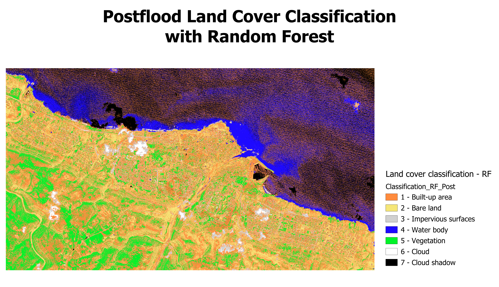

Results & Discussions
Land cover classification
Using the Minimum Distance algorithm
Using the Random Forest algorithm

Accuracy of Classifications
We will be using Overall Accuracy and Kappa Hat Classification to evaluate the accuracy of our classification. The Overall Accuracy is a measure of the proportion of correctly classified pixels over the total number of pixels, whereas Kappa Hat Classification is a discrete multivariate technique used in accuracy assessments, with values ranging from 0 - 1. The closer to 1, the better the strength of agreement or accuracy. A summary of the Overall Accuracy and Kappa Hat Classification score for Minimum Distance and Random Forest algorithms on the 2 layers can be seen in Figure 5 below.
We also looked into the finer details of the per-class accuracy using the Producer’s and User’s Accuracy metrics (PA & UA) and noted that the differences in PA and UA was quite different among classes. This may be a result of spectral similarities between some classes, resulting in misclassification between the classes. Even after trying to vary and increase the training input ROIs for the classes, PA and UA still remained low for some classes. This is a limitation of our classification that might result in an inaccurate classification and change detection map. Results of the accuracy evaluation can be found in the carousel below.
Since the Overall Accuracy and Kappa Hat Classification of Minimum Distance is better than Random Forest, the results of classification from the Minimum Distance is used for analysis of change in land cover in the subsequent sections.
Change in land cover classification
Using SCP’s land cover change function, we conduct land cover change analysis of pre and post flood layers classified with the Minimum Distance algorithm. We sieved out areas that changed to Bare land and Water body to identify areas of damage and flooding respectively. Results can be seen in figures 6 and 7 below.
Other land cover types to Bare Land
Observations: The map above shows that for the land in closer proximity to the dam, there are generally more changes from other land types to bare land. It also appears that there was more damage to Built-up areas to the East of Wadi Derna, indicating that the East part of Derna may be more prone to flood damage.
Other land cover types to Water body
Observations: The map above shows that the flooded areas as of 13 September (one day after the flood) are near the mouth of Wadi Derna where the river met the ocean. It shows that the flood had subsided in most areas, though some previously vegetated areas remain inundated. This may be because vegetated areas contained higher amounts of moisture before the flood, making them unable to absorb all the flood water that inundated that area. Other areas, however, were likely drier and thus were able to absorb flood waters.
Cross checking with other sources
We have also cross checked our analysis with other sources about the Libya floods, from COPERNICUS Emergency Management Service - Mapping. The data shows flood trace and flooded areas as of 14 September 2023, shown in Figure 8.

By comparing figures 7 and 8, we are able to observe that reported flooding areas at the mouth of Wadi Derna (in red in figure 8) corresponds to the water body areas identified in figure 7.
Recommendations
General Recommendations
Given the observations above on the land cover change, we would like to provide the following recommendations to avoid disastrous impact of floods in the future:
Avoid building settlements and buildings near the Wadi Derna and areas that were heavily impacted by this flood (flooded areas and areas with flood trace)
Rebuild the dams using an asphalt-concrete core
Build flood walls along Wadi Derna
Recommendations for emergency relief facilities
In addition, we identified areas that were turned into Bare land and Water body after the flood (damaged areas), non-damaged areas and Derna’s healthcare facilities and major roads for recommendations to locate emergency relief facilities.
The healthcare facilities in Derna are outlined in Red in the above map (figure 9). Upon closer inspection, the largest healthcare facility seems to have suffered substantial damage. The northernmost healthcare facility (near the shore) also seems to have suffered significant damage. In light of this damage and the flood, there might need to be temporary healthcare facilities set up. Our group recommends setting up temporary healthcare facilities in non-damaged built-up areas as there may not be enough time and resources to set up new facilities due to the urgency of treating injuries.
However, it must be noted that closer inspection should be done on the ground before selecting this area as temporary healthcare facilities as not all factors determining suitability can be seen from this map.
Overall, as can be seen by the above map, Derna suffered widespread damage that didn’t spare any area in particular. Due to the damage on road networks, transportation across Derna may be difficult. Therefore, emergency relief facilities such as healthcare facilities and food banks should aim to be distributed across the city and make use of existing built-up areas before evacuation and/or rebuilding efforts are in place.